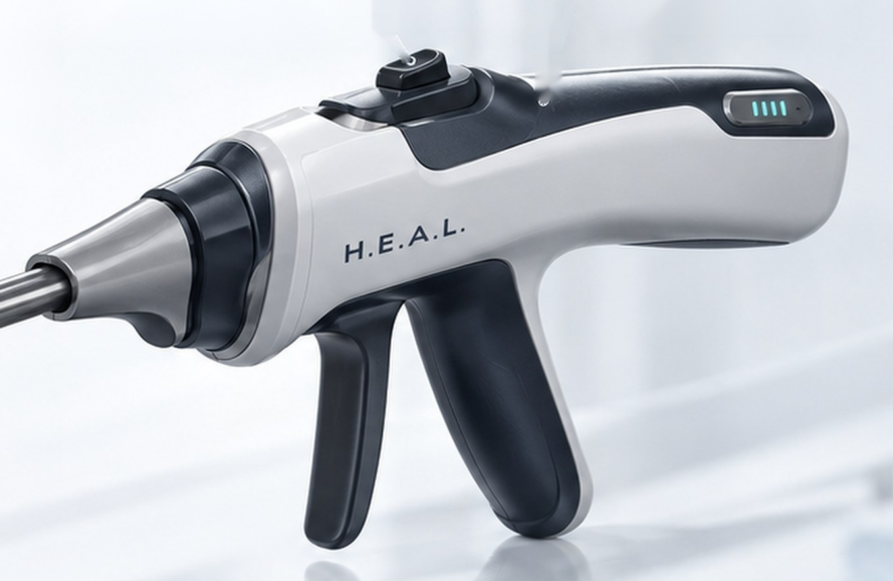
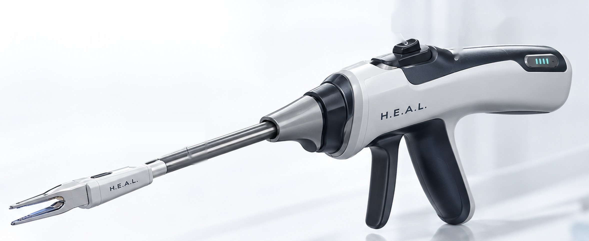
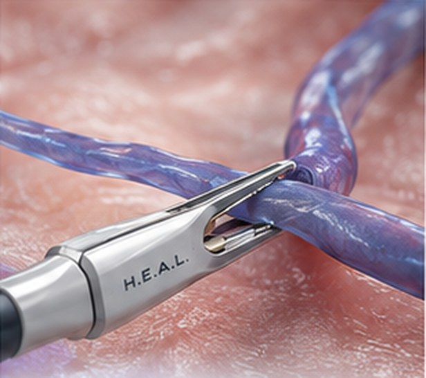
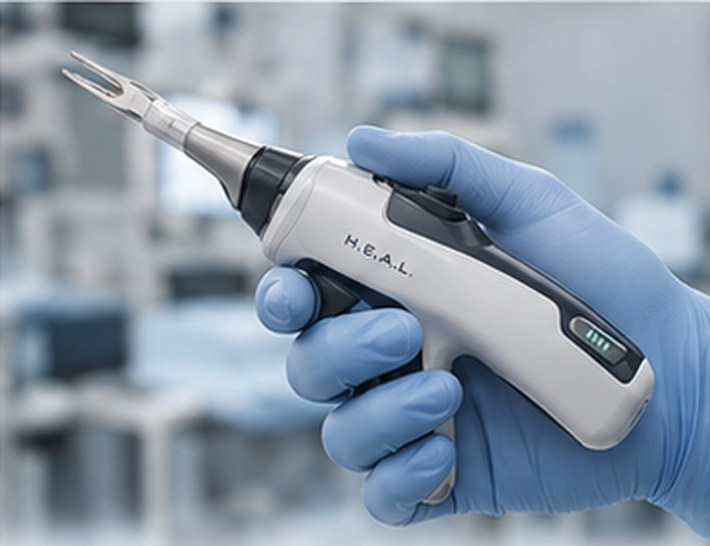

Bipolar coagulation
Integrated bipolar electrodes deliver focused energy for reliable hemostasis while grasping.
H.E.A.L.™
Handheld Bipolar Grasping Platform
Clamp / Coagulate / Confidently Proceed
A cordless, single handed instrument that grasps and seals veins in one motion, eliminating the surgical assistant and shortening every case. Built for a procedure that has never had a purpose built hemostasis device.

Precise
hemostasis
Minimally
invasive
Efficient
workflow
Versatile for
venous procedures
The opportunity
35%
of U.S. adults are affected by chronic venous disease
$4–10B
spent each year by the U.S. healthcare system on chronic venous disease
$2.6B
projected global varicose vein treatment market by 2032
Market figures from H.E.A.L. research. Full citations available in the investor deck.
The clinical need
Ambulatory phlebectomy removes diseased superficial veins through small incisions and is one of the most common treatments for symptomatic varicose veins.
Today the surgeon hooks and extracts the vein while an assistant applies pressure or handles separate cautery. That adds staff cost, extends procedure time and makes hemostasis vary from case to case.
Chronic venous disease is progressive. Left untreated it advances from visible veins to swelling, skin changes and ulceration, which keeps intervention volume growing.
Learn about chronic venous insufficiency →Current standard
With H.E.A.L.
Surgeon plus surgical assistant
Single operator, single hand
Manual pressure or generic cautery
Grasp and bipolar seal in one instrument
Hemostasis varies by operator
Consistent, repeatable hemostasis
Tethered to a generator and cart
Battery powered and cordless
The platform
The H.E.A.L. platform pairs a rechargeable handle with single use bipolar tips sized to the vein, so the surgeon can clamp, coagulate and proceed without changing instruments or calling for help.

Single handed operation
Intuitive control for grasping and bipolar energy delivery.
Reusable handle
Ergonomic, lightweight and durable. Battery powered and rechargeable.
Disposable tip
Single use, sterile tip cartridges for consistent performance.
How it works
Integrated bipolar electrodes deliver focused energy for reliable hemostasis while grasping.

Atraumatic grasping with simultaneous coagulation, ideal for ambulatory phlebectomy and related venous procedures.

Detachable tip cartridges snap onto the reusable handle. Tips are sized to vein diameter.

Compact form factor with natural ergonomics for precise, single handed control.
Business model
Handle plus disposable tips
A reusable handle sold to the practice and a sterile tip cartridge consumed on every procedure. Recurring revenue scales with case volume.
Vein clinics and vascular surgeons
Office based vein practices, ambulatory surgery centers and hospital vascular departments performing phlebectomy.
Lower staffing cost per case
Removing the assistant and shortening the procedure improves throughput and margin, the economic case that drives adoption.
Roadmap
Phase 1 · 2026
Production prototype
Finalize handle and tip design for manufacture, complete bench and pre clinical testing, and lock the design history file.
Phase 2 · Q2 2027
510(k) clearance and limited market release
Submit to FDA under the 510(k) pathway and place first units with early adopter vein practices, starting with our Chief Medical Officer's clinic.
Phase 3 · Q4 2027
Full market release
Scale tip manufacturing, build distribution, and expand into ambulatory surgery centers and hospital vascular programs.
Timeline reflects current company planning and is subject to regulatory review.
Leadership
Our mission is to design specialty focused devices that solve unmet clinical needs, support medical professionals and raise the standard of care in surgical and clinical settings.
Karl Pappas
Chief Executive Officer
BE in Biomedical Engineering. Experienced in FDA regulatory compliance, RF welding, injection molding and vascular device prototyping. Leads regulatory compliance, CAD design and technical development.
Gavin Franzon
Chief Financial Officer
BS and MS in Biomedical Engineering. Directs financial modeling and resource allocation, and integrates commercial strategy with operational planning.
James Pappas
Chief Operating Officer
BE in Mechanical Engineering and MBA in project management. Oversees regulatory planning, consultant coordination and alignment of development with commercialization.
Peter Pappas, MD
Chief Medical Officer
30+ years in venous disease. NIH grant recipient. Past President of the American Venous Forum. Author of 100+ peer reviewed manuscripts. Provides clinical guidance and will be the first adopter.
Investors and clinical partners
Request the investor deck, schedule time with the founders, or ask about early adopter and clinical advisory opportunities.